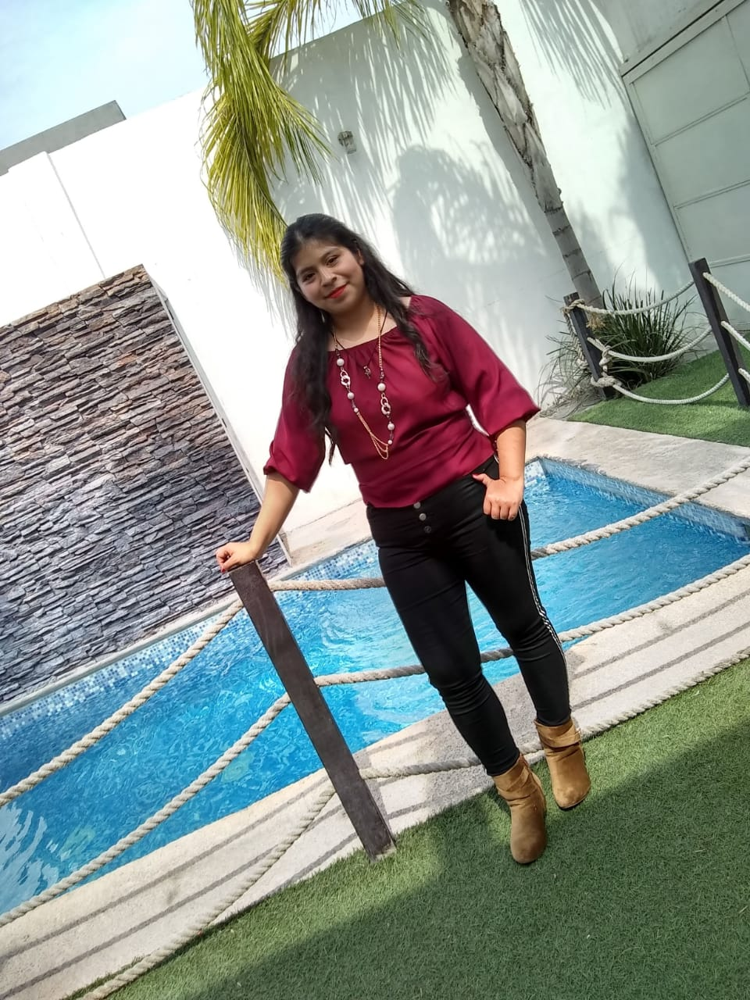
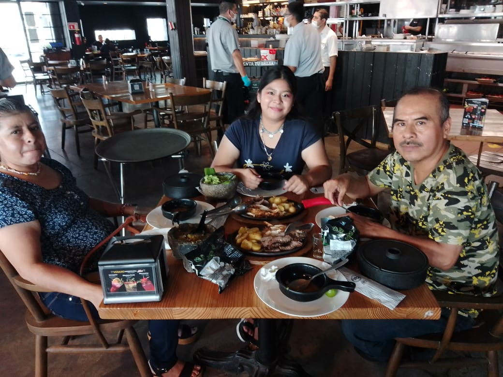
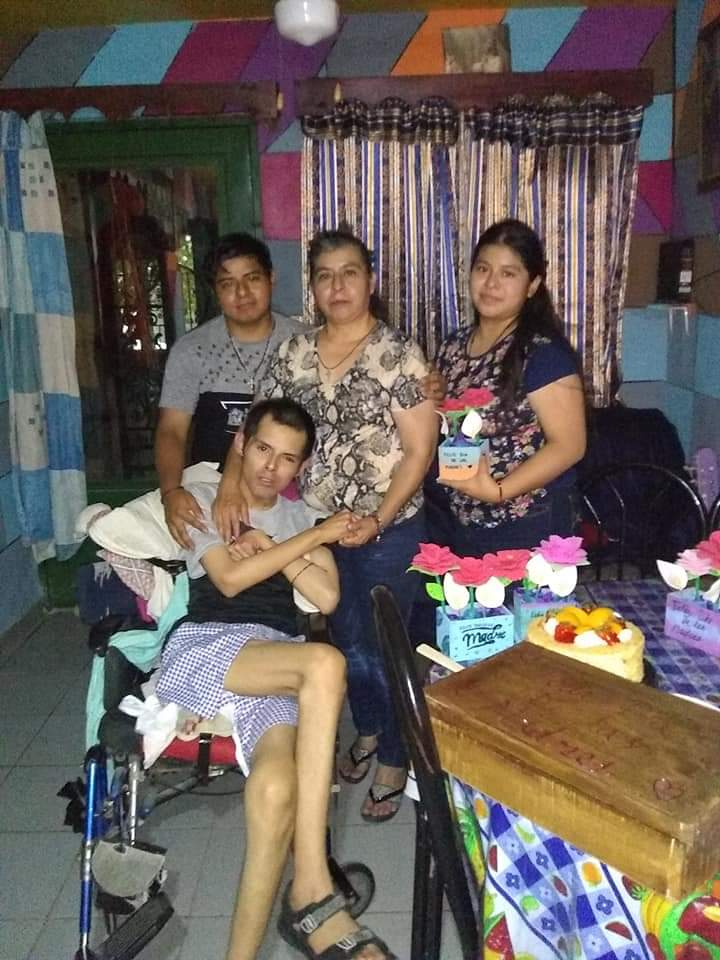
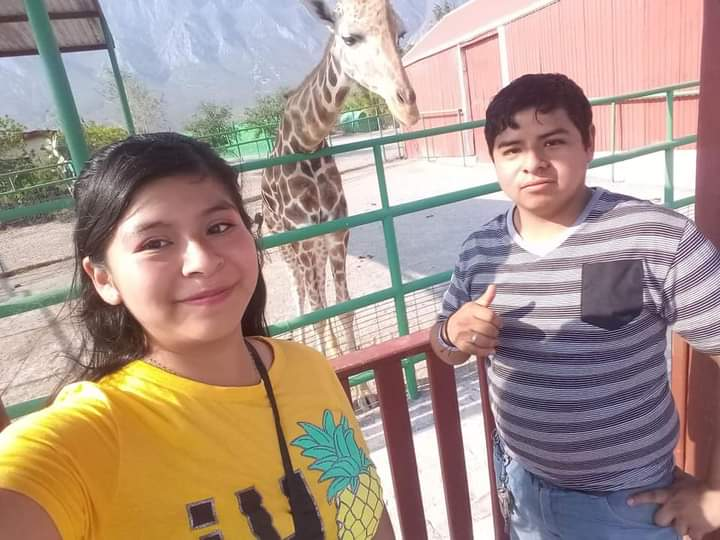

Hola
BIENVENIDO A MI PAGINA WEB
Soy Claudia Janneth Feliciano Martinez

Estudio en la Facultad de Contabiduria Publica y Administracion,
Actualmente estoy en 5° semestre: FACPYA es una univerisidad especializada para formar profesionales
en el ámbito de los negocios que contribuyan al desarrollo socio económico de la región y del país,
a través de programas educativos de calidad que les brinden las competencias críticas para
desenvolverse en escenarios globales.
Mis pasatiempos favoritos son:
-Escuchar musica
Algunas canciones que me gustan escuchar son de BTS, Ariana Grande, Billie Eilish
entre otros:
Tengo diferentes tipos de generos musicales, los cuales ayudaron
a entender y diferencias mejor mi vida como por ejemplo :
Reproducir musica
Reproducir musica 2
-Jugar con mis mascotas
El jugar y convivir con mis animales, me ayuda a olvidar de
lo malo que podria ser mi dia, ellos me dan una sonrisa, por eso tarto de pasar
el mayor tiempo libre con ellos(Los de la imagenes son algunos de ellos)


-Convivir, jugar y platicar con mi familia y amigos
Convivir con mi familia, amigos y compañeros me ayuda mucho, podria decir que
me distrae de todo lo pendiente que tengo o los problemas que pueda a llevarse a cometer, por eso
cada ratito que comparto con ellos lo disfruto mucho y aprecio mucho


Mi familia es lo mas importante que tengo y por eso los voy a proteger y valorar como se los merecen,
aunque hemos tenido problemas los sabemos enfrentar Cada familia es distinta, cada una tiene unas
características diferentes. Unas son grandes y otras chicas, unas divertidas y otras más serias,
pero hay algo que todas tienen en común: el amor.
-Salir a pasear con mi familia a lugares nuevos

El convivir y disfrutar un momento de familia es algo que me gusta y
me agrada mucho por eso quiero que conozcan el lugar donde fuimos llamado zoologico xempal, ubicado
en Garcia Nuevo Leon.
Xempal es Centro Ecológico que cuenta con diversas atracciones para venir con familia
y amigos donde fomentamos el cuidado y la conservación de los animales con educación y diversión,
Estamos a 7 kilómetros de las Grutas de Garcia, Convive con animales exóticos
y de granja, disfruta de nuestro extraordinario recorrido estilo safari el cual lo realizarás
en la comodidad de nuestros vagones, donde podrás admirar animales africanos, asiáticos
y así mismo disfrutar de la impresionante sierra del fraile. No dejes de vivir la adrenalina
de nuestro Circuito Tirolesas. También te invitamos a que disfrutes de un rico snack que
podrás adquirir a un buen costo.
Elaborado por Claudia Janneth Feliciano Martinez